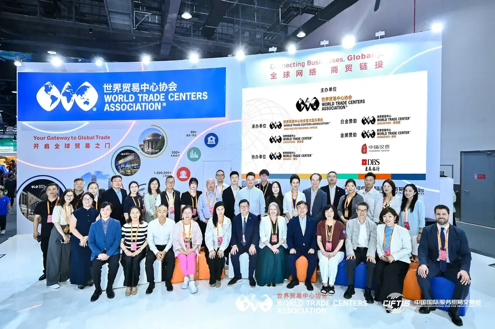
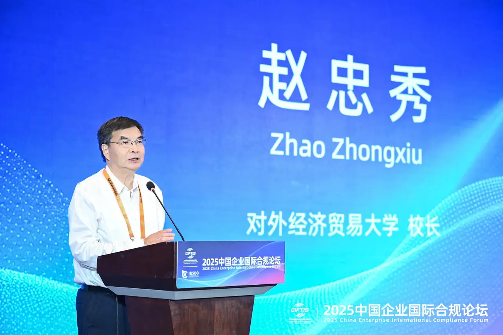
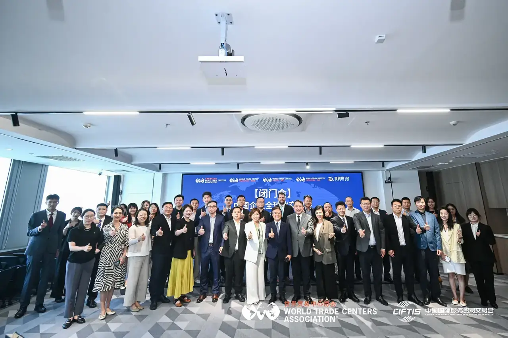
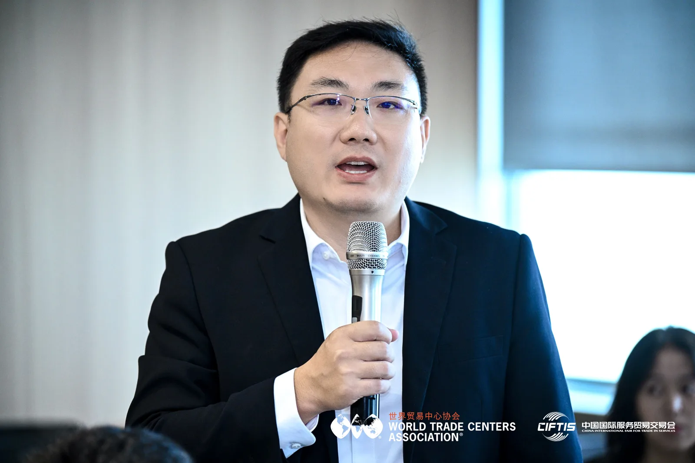
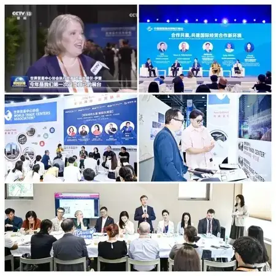
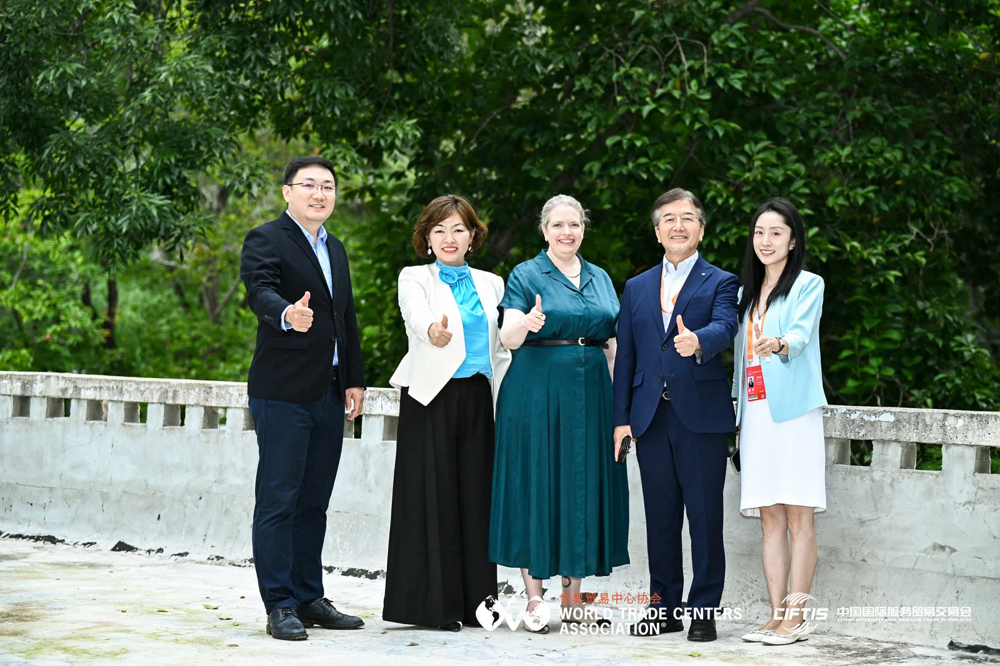
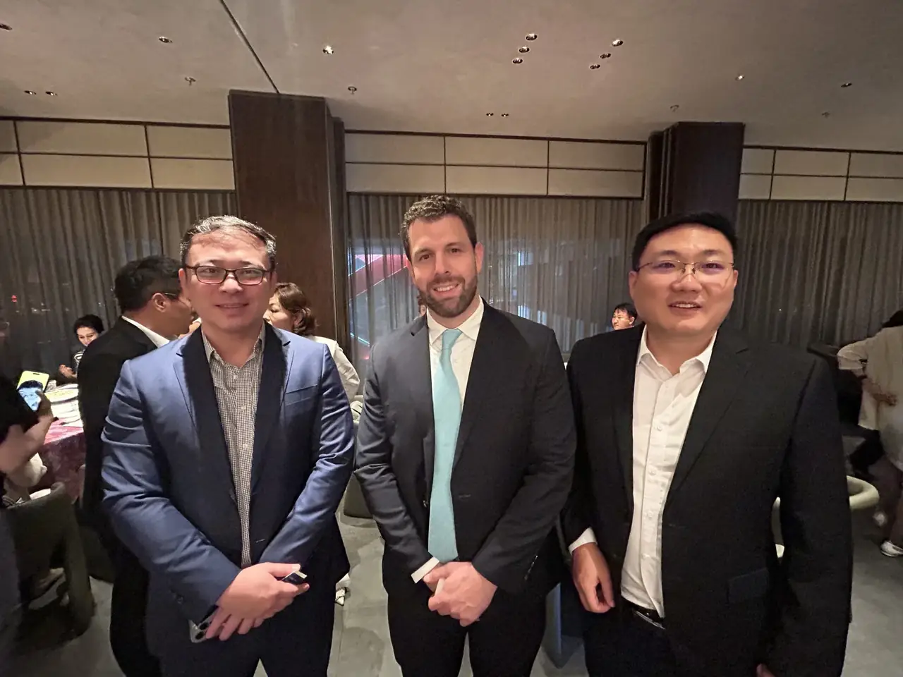
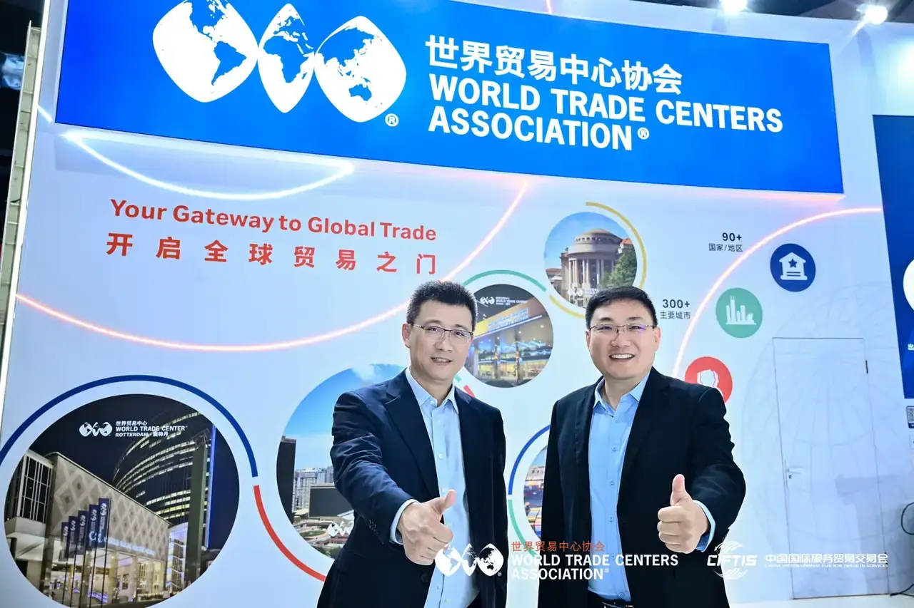
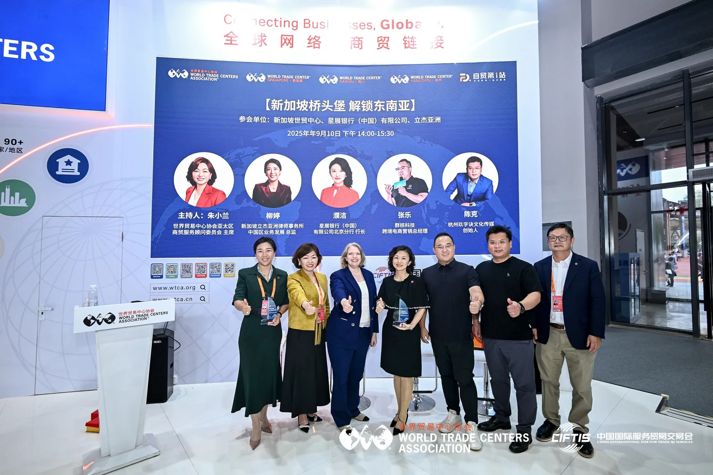

——我在2025年服贸会现场看到的一个变化
2025年9月，我在北京参加中国国际服务贸易交易会（服贸会）。
这是WTCA首次在服贸会上设立自己的展馆。
几天时间里，来自不同国家和地区的世界贸易中心代表、商业伙伴和中国企业代表聚在一起。有人谈国际贸易，有人谈企业出海，也有人在非常具体地讨论一个问题：
如果一家中国企业真的决定进入海外市场，它的第一步应该怎么走？
后来回想起来，我记住的并不是展馆有多大，也不是参加了多少场活动。
我记住的是一个越来越具体的问题：
中国企业进入东南亚，到底应该怎么进入？
不是“要不要去”。
也不是“东南亚有没有机会”。
而是——
真正进入一个陌生市场，第一步究竟应该怎么走？

9月10日，服贸会正式开幕。
WTCA执行总裁克丽丝特尔·伊登（Crystal Edn）出席服贸会开幕式“全球服务贸易峰会”。
在这样的场合，大家讨论的是服务贸易、全球合作和更高水平开放这些宏观议题。
但到了同期举行的2025中国企业国际合规论坛，讨论开始迅速落到企业身上。
对外经济贸易大学校长赵忠秀围绕服务贸易创新发展和制度型开放发表主题演讲，谈到如何通过制度型开放、与国际高标准经贸规则衔接以及数字贸易发展，为服务贸易创新提供新的空间。
朱小兰和张克也参与了中国企业出海合规相关的讨论。
我当时有一个很明显的感觉：
企业走向海外之后，真正需要面对的第一道门，往往不是市场，而是规则。
法律、税务、金融、数据、知识产权……
这些事情平时很少出现在企业宣传册最显眼的位置，但当企业真正进入一个陌生市场，它们很快就会从“后台问题”变成决定业务能不能继续往前走的现实问题。
所以我越来越理解，为什么企业出海不能只讨论“去哪里”。
还必须讨论：
进去以后，怎么做。

服贸会期间，WTCA组织了一场中国企业出海交流闭门会。
相比公开论坛，这场会议少了一些宏大的表达。
大家坐下来，谈的是更具体的事情。
这一次，我们新加坡世贸中心也参与其中。
与我们一起坐在这张桌子旁的，还有来自萨尔蒂约世贸中心、东京世贸中心和大阪世贸中心的代表。
萨尔蒂约、东京、大阪和新加坡四个世贸中心，连接的是完全不同的商业环境：墨西哥、日本和新加坡。
而坐在另一边的，是正在思考国际化布局的中国企业，包括博彦科技（002649）、明阳智能（601615）和国联股份（603613）。
张克、朱小兰和我也参与了这场讨论。
我特别喜欢这种交流方式。
因为当大家不再需要面对一个正式的舞台，而是坐在一起讨论具体问题时，很多事情反而会变得更加清楚。
企业真正关心的，往往不是一句“海外市场机会巨大”。
而是：
当地谁真正懂这个行业？
谁可以成为可靠的合作伙伴？
资金怎么进入？
客户怎么找到？
法律和合规怎么处理？
如果进入一个完全陌生的市场，遇到问题以后，又应该去找谁？
这些问题看起来很琐碎。
但企业真正开始国际化以后，往往就是这些琐碎的问题决定了事情能不能继续往下走。
而这也让我重新思考了世界贸易中心网络的意义。
萨尔蒂约世贸中心、东京世贸中心、大阪世贸中心和新加坡世贸中心，当然分别扎根于不同市场。
但它们真正能够提供的，并不只是一个地点。
如果一个企业今天在北京，明天准备去日本，它需要的可能不是一份日本市场概况，而是一个真正了解当地商业环境的人。
如果它准备进入墨西哥，同样需要当地的经验、资源和可信任的连接。
如果它准备进入东南亚，新加坡也不应该成为旅程的终点。
网络的价值，不在于地图上有多少个城市，而在于企业真正需要的时候，那里有没有一个可以找到的人。


如果说闭门会让我从全球网络的角度重新思考企业出海，那么WTCA展馆里的“东南亚专场”，则让我更加具体地看到了企业进入东南亚时真正面对的挑战。
那场圆桌的主题是：
“新加坡桥头堡，解锁东南亚”。
WTCA亚太区商贸服务顾问委员会主席朱小兰开场时说：
“东南亚早已不是‘可选项’，而是中国企业出海‘必答题’。”
我记得这句话。
因为今天再看，中国企业进入东南亚已经不是一个“要不要去”的问题。
越来越多的企业已经来了。
真正的问题是：
来了以后，怎么真正进入当地。
接下来的讨论非常具体。
立杰亚洲中国区业务发展总监柳婷谈的是合规。
她提醒企业，不同东南亚国家的法律制度差异很大，前期为了节省成本而忽略尽调，最后可能付出远高于预期的代价。
她特别提到，新加坡不仅具备金融和税制方面的优势，其国际认可度较高的法律体系，也可以在企业开展跨境业务时提供重要的制度保障。
星展银行（中国）有限公司北京分行行长濮洁谈的是金融。
她特别提醒企业，不要简单理解为“钱出去了，就可以自由流动”。
越南、泰国等市场在外汇管理方面都有自己的规则，企业应该在进入市场的早期，就开始设计自己的资金架构。
杭州科技六小龙·群核科技跨境电商营销总经理张乐谈的是本地化。
他说了一句话，我后来一直记着：
“不是走出去，而是走进去。”
我觉得这句话特别准确。
对群核科技而言，本地化并不是把产品换一种语言，而是重新理解当地消费者。企业甚至需要在马来西亚、印度尼西亚建立本地设计团队，重新思考产品体验。
杭州市电子商务协会跨境电商专委会执行秘书长、杭州玖字诀文化传媒创始人陈克谈的是品牌。
一个在中国已经有一定知名度的品牌，到了东南亚，很可能重新变成一张白纸。
当地的宗教、节日、家庭观念、消费习惯和审美偏好，都可能影响一个品牌最终能不能被接受。
听到这里，我反而觉得，“新加坡桥头堡”这句话变得更加具体了。
新加坡的意义，并不是让企业停在新加坡。
恰恰相反。
它应该帮助企业从一个相对熟悉、国际化程度较高的环境出发，逐步理解这个区域，然后进入更复杂、更多元的东南亚市场。

我越来越觉得，中国企业现在真正需要完成的，是从“走出去”到“走进去”的变化。
产品卖到海外，不等于国际化。
注册一家海外公司，不等于国际化。
开一个海外办公室，也不等于真正进入当地。
真正的“走进去”，意味着你开始理解当地客户。
理解当地法律。
理解当地金融体系。
理解当地文化。
理解当地的商业关系。
甚至重新思考自己的产品和品牌应该以什么方式存在。
所以我有时候会觉得：
企业出海，其实很像在另一个国家重新创业一次。
这也是为什么，在那次闭门会和东南亚专场之间，我看到了一条非常清晰的线。
无论是博彦科技、明阳智能、国联股份这样的中国企业，还是萨尔蒂约世贸中心、东京世贸中心、大阪世贸中心和新加坡世贸中心这样的国际网络节点，大家最终讨论的，其实都是同一件事：
怎样让一个企业在陌生市场里找到自己的位置。
参加那次服贸会的时候，我还在不断观察、学习和思考。
现在，作为WTC Singapore Secretary General & COO，我对这件事情有了更具体的理解。
新加坡可以是一个入口。
但一个入口只有在后面真正存在一条路的时候，才有意义。
所以我理解的WTC Singapore，不应该只是把企业带到新加坡。
我们更希望做的是：
帮助企业从新加坡出发，连接更大的东南亚市场和全球商业网络。
连接资本与项目。
连接技术与产业。
连接企业与市场。
更重要的是，连接一个企业和它在陌生市场里真正需要认识的人。
这也是我在那次闭门会里最深的一层感受。
当萨尔蒂约世贸中心、东京世贸中心、大阪世贸中心和新加坡世贸中心坐在同一张桌子旁边时，它们真正代表的并不是四个地点。
它们代表的是：
企业走向不同市场之后，可以继续找到谁。
现在回头看，2025年服贸会期间发生的很多事情，当时其实都很小。
一次论坛。
一场圆桌。
一次闭门会。
一次交换联系方式。
一次会后的短暂交谈。
当时没有人知道哪一次交流最终一定会变成一个项目。
但国际商业关系本来就是这样建立起来的。
可能是一通电话。
可能是一次介绍。
可能是几个月之后的一次重新联系。
也可能是一家企业遇到问题的时候，突然想起几个月前在北京认识的那个人。
我现在越来越觉得，国际化从来不是一次“走出去”的动作。
它是由无数次真实的连接组成的。
而一个好的国际网络，也不是由地图上的那些点组成的。
它是由一个个愿意接起电话、愿意介绍朋友、愿意分享当地经验的人组成的。
服贸会结束之后，我一直记着WTCA亚太区商贸服务顾问委员会主席朱小兰在东南亚专场最后说的那句话：
“新加坡是桥头堡，但不是终点。”
当时听起来，它只是对那场讨论的一个总结。
但现在回头看，我觉得它其实也很像我后来越来越理解WTC Singapore的一句话。
新加坡可以是桥头堡。
但真正重要的，是从这个桥头堡出发之后，你能不能找到值得信任的人，一起走下去。
也许这才是一个国际商业网络真正有分量的地方。
不是告诉企业：
“这里有一个市场。”
而是在它准备出发的时候告诉它：
“我知道谁在那里。”
而很多真正重要的事情，可能就是从这一句话开始的。



